Linear model for classification
Learning outcomes:
After completing this lesson you should be able to:
- understand linearly separable classification problems
- extend the concepts of linear models covered in unit 4 to perform to tackle linearly separable classification problems
- understand the role of the activation function and its vital role in tackling in the context of classification.
Recall that the problem of classification is concerned with finding a class of a data point based on its attributes.
Often we have a dataset of data points representing some objects or cases. These objects have a set of attributes with corresponding categorical labels. The task is to build a model to predict the label from the attributes. Unlike the problem of regression, in classification the labels are discrete not continuous and each category represents a class. This might seem an easier thing to do than regression. However, the problem of classification is more fundamental and often more difficult to do in some respects. In regression, the main difficulty is that we want to come as close as possible to the real value of the label and we need to come up with estimated values that are accurate. The difficulty in classification, on the other hand, is that we need to build an accurate decision boundary that correctly separates the areas of the classes. If we are going to do that numerically then the concern is not to accurately come close to a real value, but rather to come up with an accurate decision boundary that is resilient to misclassification and maps a set of sometimes very different data points to the same class. At the same time, it must be sensitive when we switch from one class to the other.
Indeed, in this lesson we will extend the ideas of linear regressions from previous lessons to form decision boundaries similar to the ones that we have covered in Unit 2. Recall that a decision tree has a set of decision boundaries that stem from its conditional nodes. The question is: can we start fundamentally from the idea of a decision boundary and create a model that distinguishes between two classes?
For simplicity of presentation, let us start by assuming that the data is numerical and it has one attribute and one label and each label can take either of two classes. This is called a binary class problem. So, the data exists in a two-dimensional space but the ideas that we will develop should be expandable to m dimensional space. The easiest case to start off with is when the two classes are linearly separable. These five assumptions allow us to solve this case by just a simple line. In other words, it is sufficient to draw a line between two classes to separate them in a 1d space (remember we have one attribute and one label). So can we devise a model that learns the best line position for separating between two classes? The answer is yes and it is called a linear model for classification.
However, unlike linear regression we need not only devise a linear separation but we need to make sure to map the result of any point x with respect to this line to tell us at which side of the line the point lies within. So in this case, this can be represented on just one axis of real values. In figure 5.2 below we see the simplest decision boundary with one attribute x. any point that lies within the positive side is of class +1 and any point in the left in the negative side belongs to class -1.
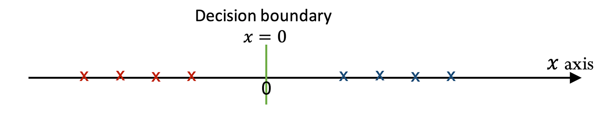
Figure 5.2. Decision boundary \(x = 0\)
The choice of labels is a matter of naming conventions and will not affect the results; we can choose labels like \(C_{1}\) and \(C_{2}\) or 1,0 etc. Effectively, the decision boundary \(x=0\) tells us that:
- If \(x \geq 0\) then its class is 1
- If \(x<0\) then its class is 0
Or
- If \(x \geq 0\) then its class is +1
- If \(x<0\) then its class is -1
We can expand this to an arbitrary decision boundary on the \(x\) axis. The example in figure 5.3 below shows a decision boundary for \(x-5=0\) which is basically telling us that:
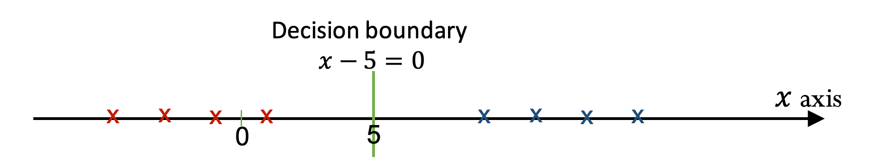
Figure 5.3. Decision boundary \(x - 5 = 0\)
If \(x-5 \geq 0\) then its class is +1
If \(x-5<0\) then its class is -1
Now let us expand this idea to the 2D space. Let us assume that we have two attributes \(x_{1}\) and \(x_{2}\) and our dataset looks like the following, as shown in figures 5.4 to 5.7.
Note that in this case \(x_{2}\) does not play any role in the decision and our green line linear classification model is telling us that:
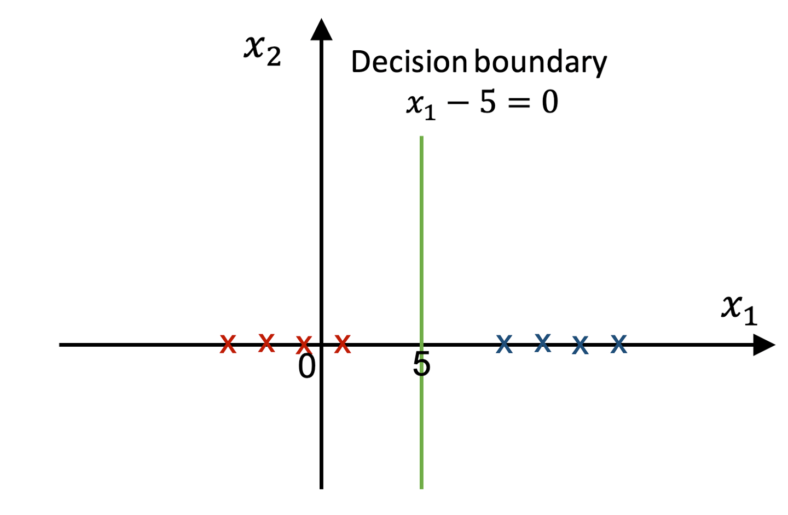
Figure 5.4. Decision boundary \(x_{1}\) - 5 = 0
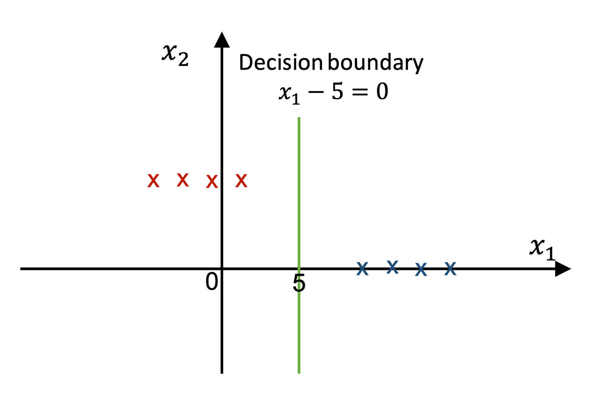
Figure 5.5. Decision boundary \(x_{1}\) - 5 = 0
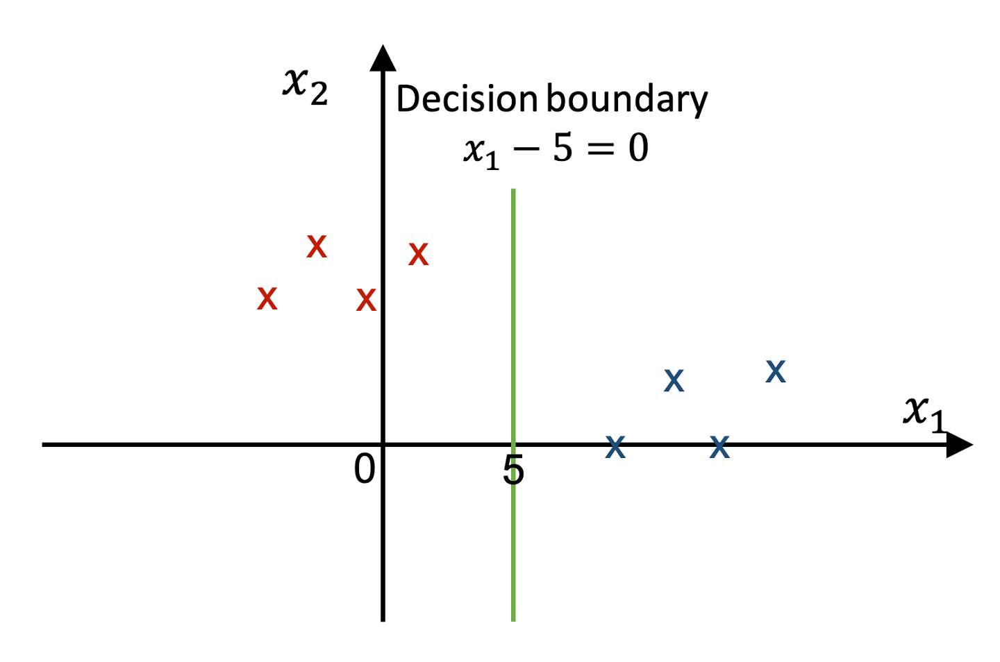
Figure 5.6. Decision boundary \(x_{1}\) - 5 = 0
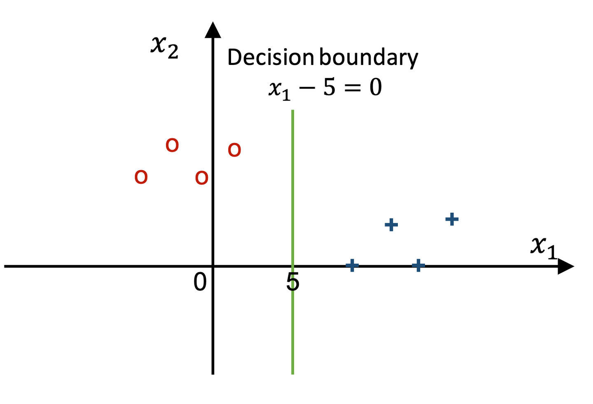
Figure 5.7. Decision boundary \(x_{1}\) - 5 = 0
- If \(x_{1}-5 \geq 0\) then its class is +1
- If \(x_{1}-5<0\) then its class is -1
To make this more formal we will call the class label y.
- If \(x_{1}-5 \geq 0\) then its class is \(y\left(x_{1}\right)=+1\)
- If \(x_{1}-5<0\) then its class is \(y\left(x_{1}\right)=-1\)
To make this more formal we will call the class label y.
This can be further formalised by stating the prediction label as follows:
When our dataset is as shown in figure 5.8 below:
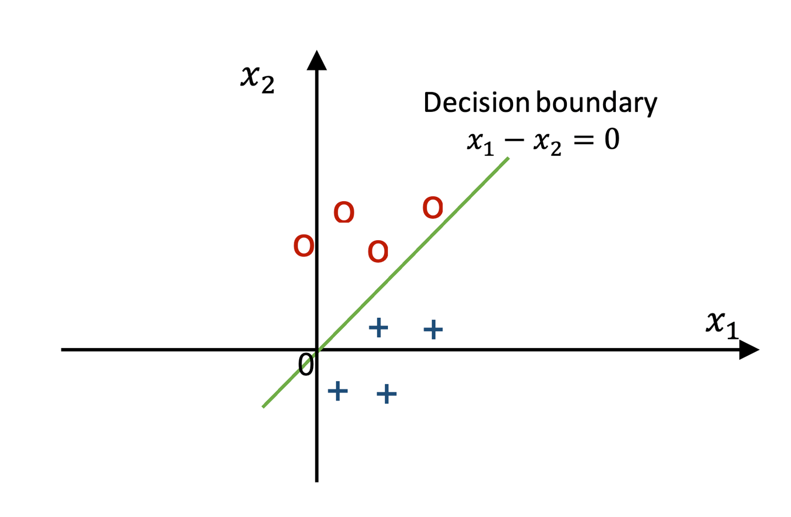
Figure 5.8. Decision boundary \(x_{1}\) - \(x_{2}\) = 0
Then the model decision boundaries can be expressed as follows:
If \(x_{1}-x_{2} \geq 0\) then its class is \(y(x)=+1\)
If \(x_{1}-x_{2}<0\) then its class is \(y(x)=-1\)
In all of the above we can adopt a linear model that looks like the following:
The decisions will be made based on:
If \(a x_{1}+b x_{2}+d \geq 0\) then its class is \(y\left(\mathbf{x}\right)=+1\)
If \(a x_{1}+b x_{2}+d<0\) then its class is \(y(\mathbf{x})=-1\)
The above is just a straight line equation and can be expressed as x_2=mx_1+c and the decisions will be made based on:
If \(m x_{1}+c \geq x_{2}\) then its class is \(y\left(\mathbf{x}\right)=+1\)
If \(m x_{1}+c<x_{2}\) then its class is \(y(\mathbf{x})=-1\)
However, often we would want to keep the decision boundaries related to 0 as we did earlier. This will help us to express the model in a vectorised form as follows:
Where \(f\) is called the activation function that helps map the linear model into a label.
The activation function
It is important to note that we need to use a function \(f\) to map the values \(\mathbf{w}^{\top} \mathbf{x}\) into some sort of decision that is related to the label. In our previous examples we used the sign of the product to decide. This is called the step activation function and it is shown in figure 5.9 below.
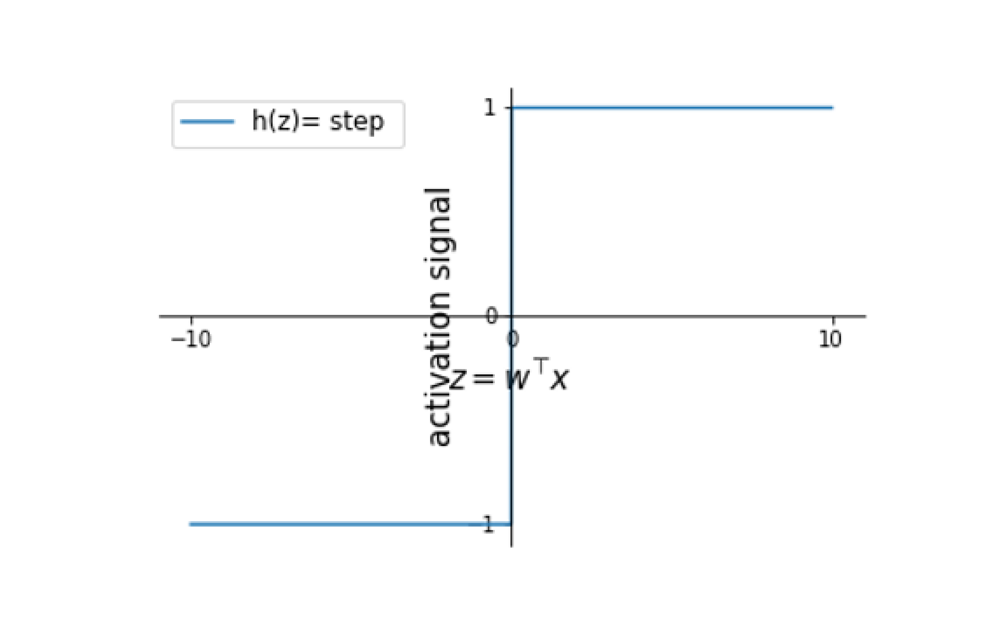
There are some important and often overlooked subtleties to notice here. First \(y\) is not the boundaries \(\mathbf{w}^{\top} \mathbf{x}\) although it is inferred from it via \(f\). Secondly, \(y\) is fundamentally not a continuous value unlike the attribute \(\mathrm{x} 2\) for example. Nevertheless, it can be mapped into a continuous space to follow the continuum of values \(\mathbf{w}^{\top} \mathbf{x}\) can take as we saw earlier in the step activation function where essentially we have all positive \(\mathbf{w}^{\top} \mathbf{x}\) values are mapped into \(\mathrm{y}=1\) and all negative values of \(\mathbf{w}^{\top} \mathbf{x}\) are mapped into the value \(-1\). So, any time the value of \(\mathbf{w}^{\top} \mathbf{x}_{n}\) is positive for some data point \(\mathbf{x}_{n}\) then we classify \(\mathbf{x}_{n}\) as belonging to class \(+1\) and conversely any time we have that \(\mathbf{w}^{\top} \mathbf{x}_{n}\) is negative then we classify \(\mathbf{x}_{n}\) to be of class \(-1\).
Note that for the activation function, we have \(\mathbf{w}^{\top} \mathbf{x}\) on the horizontal axis and \(y\) on the vertical axis, so please do not mix between \(x_{2}\) and \(y\) they are two different things; \(x_{2}\) is an attribute and it participates in forming the depicted decision boundaries, while \(y\) is a label. More explicitly, in regression the straight line equations in 2D represented the relationship between a one attribute \(x\) and the label \(y\). On the other hand, the straight line here represents the relationship between attributes \(x_{1}\) and \(x_{2}\) and is used to separate the classes using a step activation function.
Function \(f\) is called an activation function because it activates, or issues a signal, whether the data point \(\left(x_{1}, x_{2}\right)\) belongs to class \(+1\) or \(-1\). Other activation functions are possible. For example, if we prefer to use \(\{0,1\}\) labels we can use a different step activation function as follows in figure 5.10.
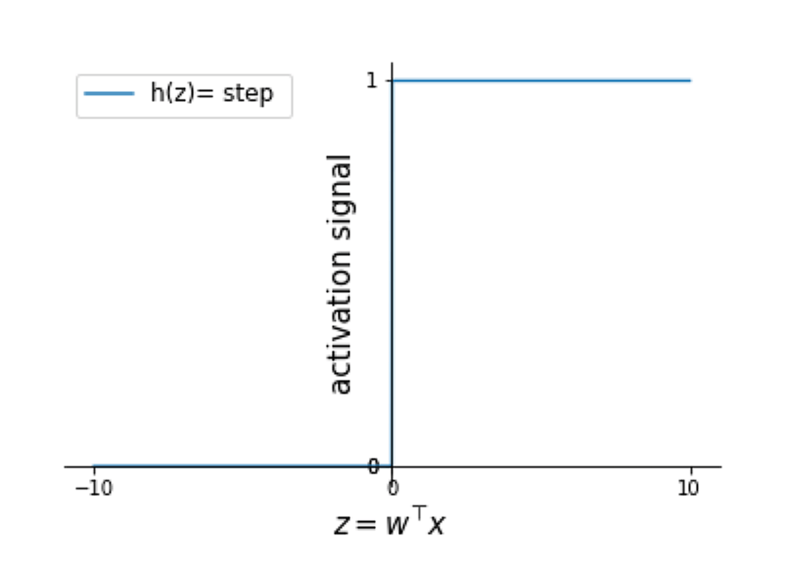
Also for example if we want to confine the values to a \([0,1]\) interval while allowing the activation function to take values in between to reflect the strength of the belief, or the probability, that a data point \(\mathbf{x}_{\mathrm{n}}\) belongs (or not) to the positive class then we can use the logistic function (aka sigmoid) shown below in figure 5.11.
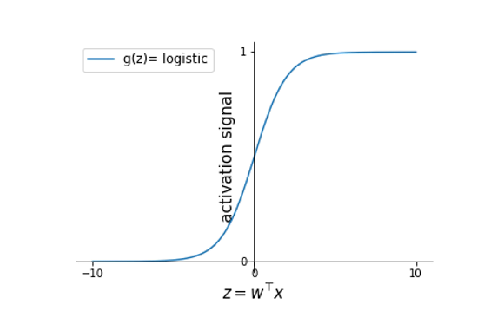
A final activation function that is quite important in modern neural network is the rectifier linear unit or ReLU for short. This simple function takes the form:
In other words, it takes the same value of \(x\) if \(x\) is positive and 0 otherwise, which means that it is always nonnegative. We show this function in figure 5.12 below.
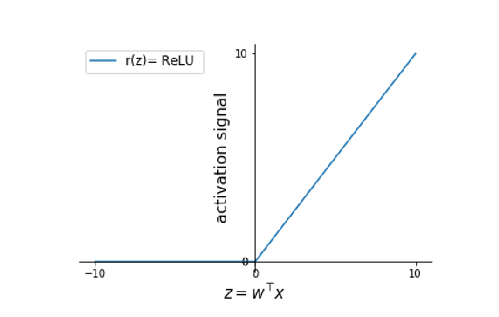
The ReLU is a piecewise linear function. It outperforms other activation functions such as the sigmoid and the tanh which used to be popular in neural networks, and it is now the default activation function for deep learning. It should be noted that while other activation functions such as the cos or sin have been found to work as well as the sigmoid, all of the more complex functions suffer from saturation where they become insensitive to change beyond some threshold. ReLU overcomes this and other issues. It also has a better gradient propagation. The other advantage of ReLU is its speed in comparison with sigmoidal functions. There are several variants of this function, such as the Leaky ReLU, but in general they perform comparable to ReLU. Leaky ReLU allows a small positive gradient when the unit is not active. In other words, it does not reach 0 which guarantees that the unit activation will not completely cancel when it receives a negative signal.
Linear decision boundaries
In linear classification we use a linear combination of the attributes and the weights and pass them through the activation function; this is why we use the term linear. Unlike regression, the activation function that dictates the final decision of what the class is can be non-linear. The decision boundary is given as:
Some examples of different straight line decision boundaries are shown below in figure 5.13. Again, note that the linear relationship is between \(x_{1}\) and \(x_{2}\) and this is why we say that we are dealing with a linear classification model.
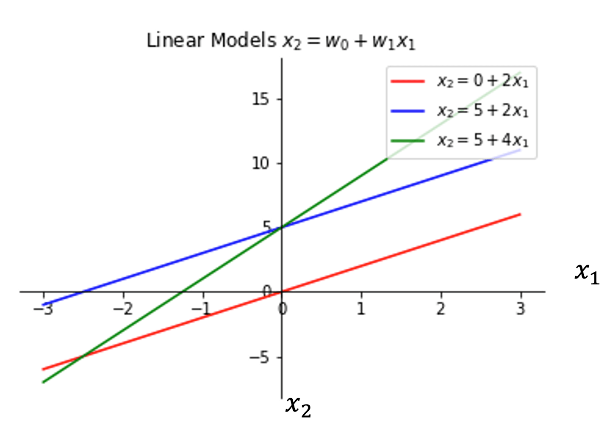
Figure 5.13. Examples of linear models for classification, no data is shown.
You might ask, but how should we tune the model? And can we optimise its parameters choice to draw a line that maximises the distance and separability of the classes in the data? As you already know, a line can be drawn in many ways. Mainly there are two parameters of a line that completely specify the line with no ambiguity. This formula defines adjustable weights parameters \(w_{i}\) that we need to learn the best value of, in order to classify our data. In figure 5.14 below, we show a schematic illustration of a linear classification model. The dashed line box denotes scaling of each component in the input set (this is done on the level of the dataset and on the level of individual record, see Unit 1 for more details).
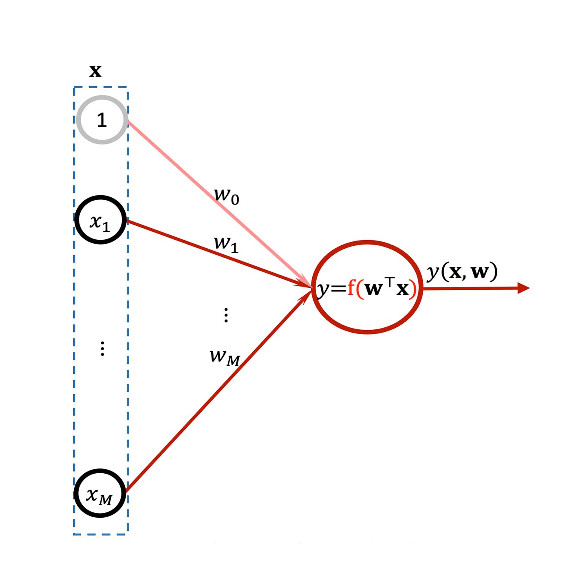
For now, let us see how we can construct different linear models (perceptrons):
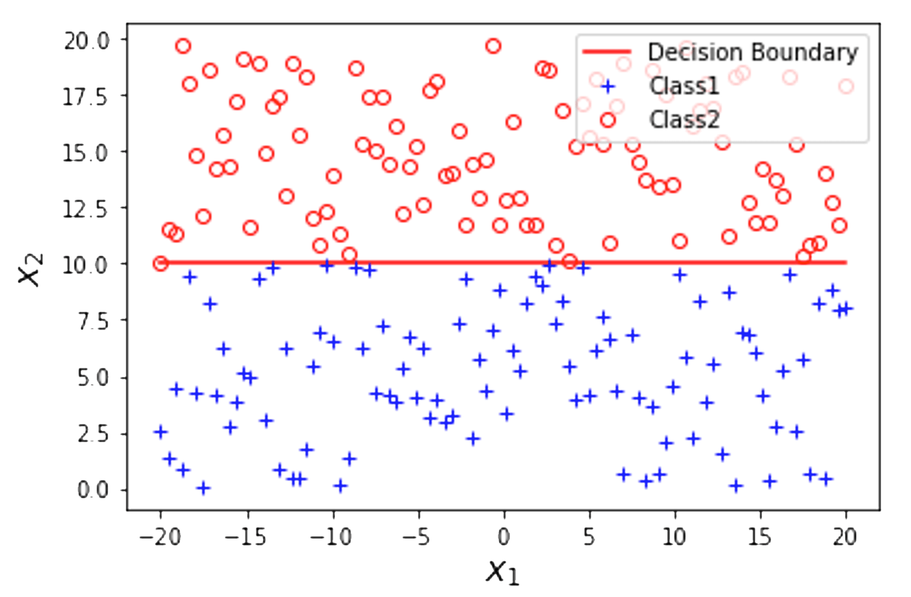
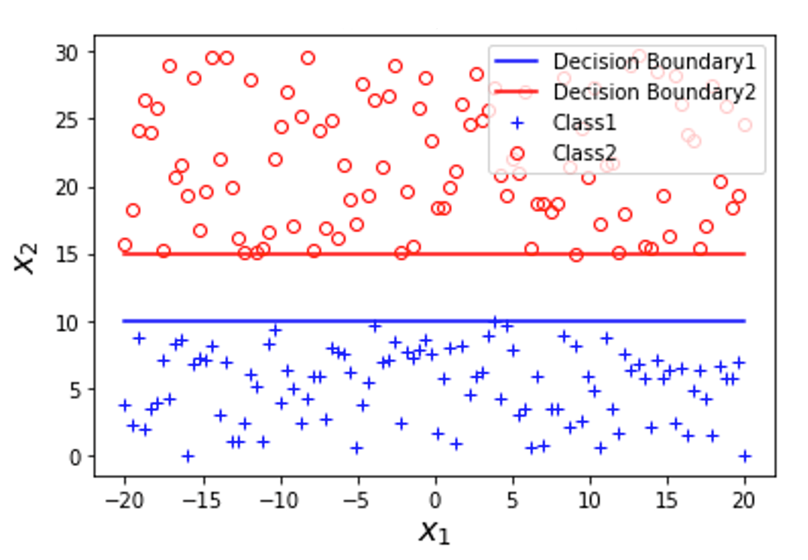
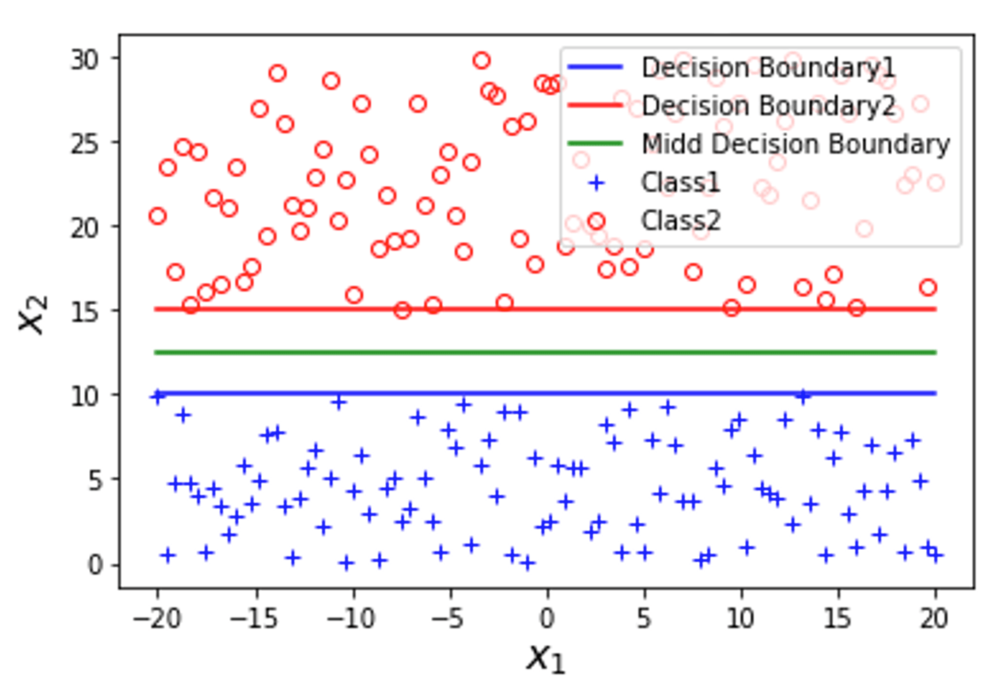
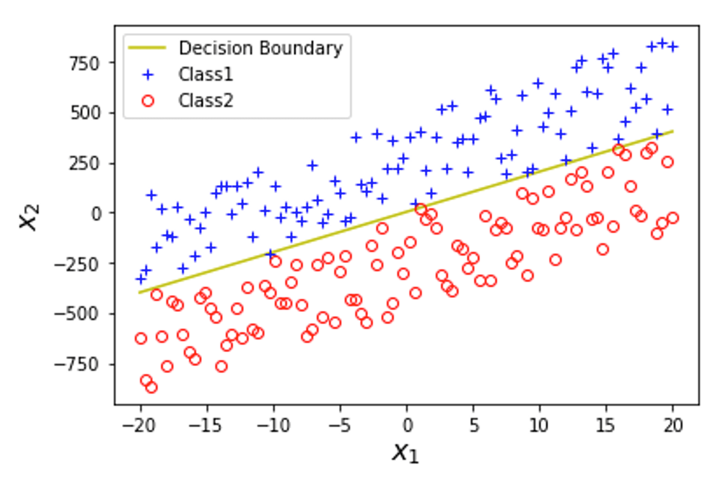
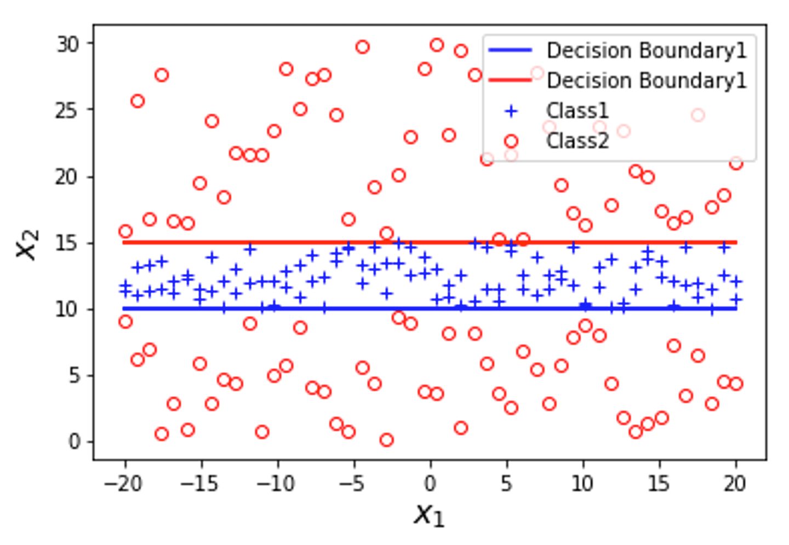
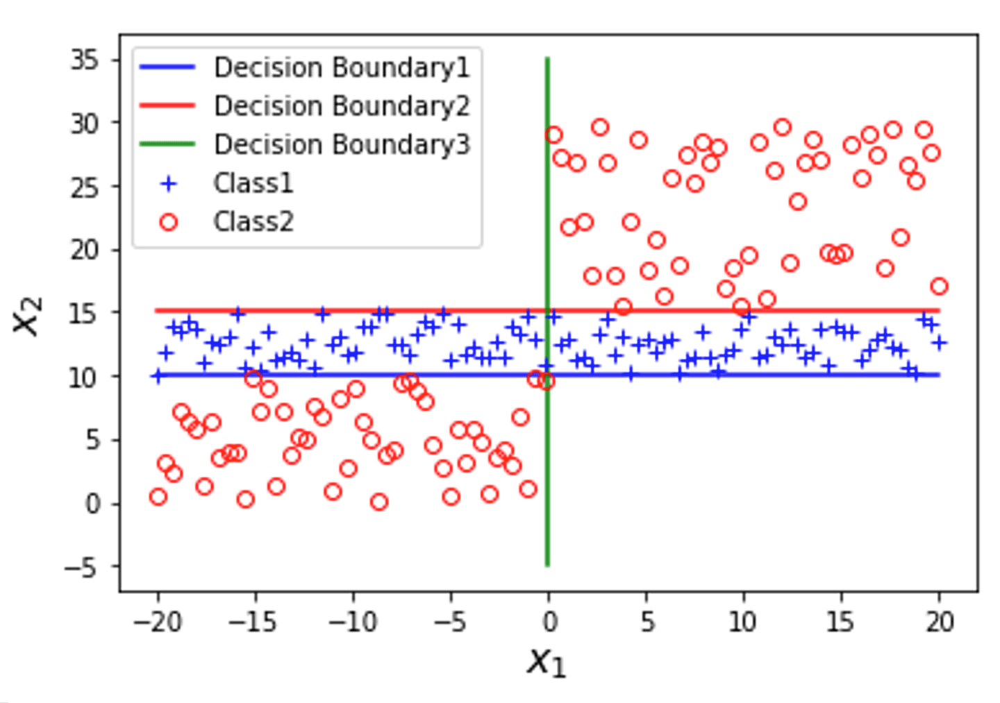
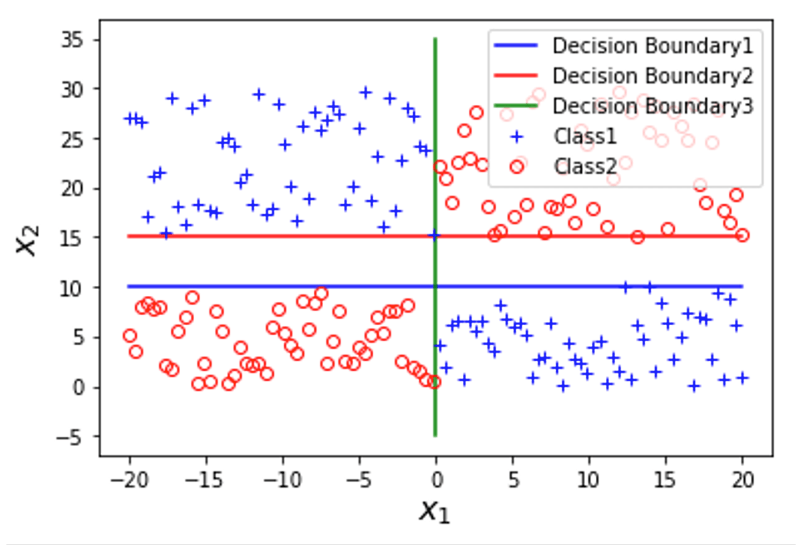
Learning algorithm for the linear model classifier
Similar to linear regression, learning a linear classifier takes place by adjusting the weights parameters. In order to adjust the weights meaningfully we need to define a loss function for classification. Let us look into a tangible example, to see how we can define the loss function and how learning can take place naturally. Figure 5.22 below shows a simple almost linearly separable dataset with two classes and two attributes \(x_{1}\) and \(x_{2}\) plotted in 2D.
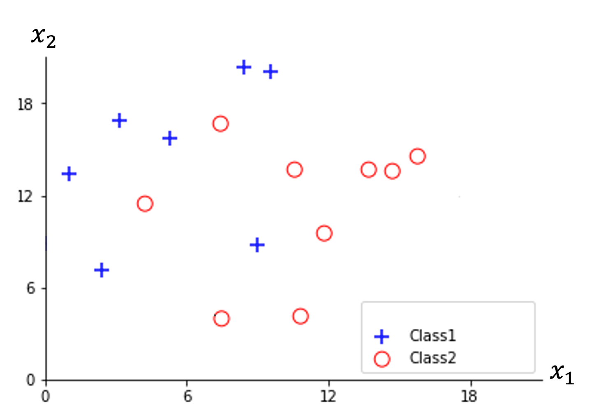
Figure 5.22. Example of binary class dataset.
To learn the best classifier, we need to position the line optimally so that it clearly differentiates between the two classes. Note that there is no perfect linear solution here as the data is non-linearly separable, but this may be due to noise rather than the nature of the data. Below in figure 5.23 we see an example of a linear decision boundary \(x_{2}=2 x_{1}-4\) that attempts to separate the two classes. The linear classification model that predicts the labels is given as:
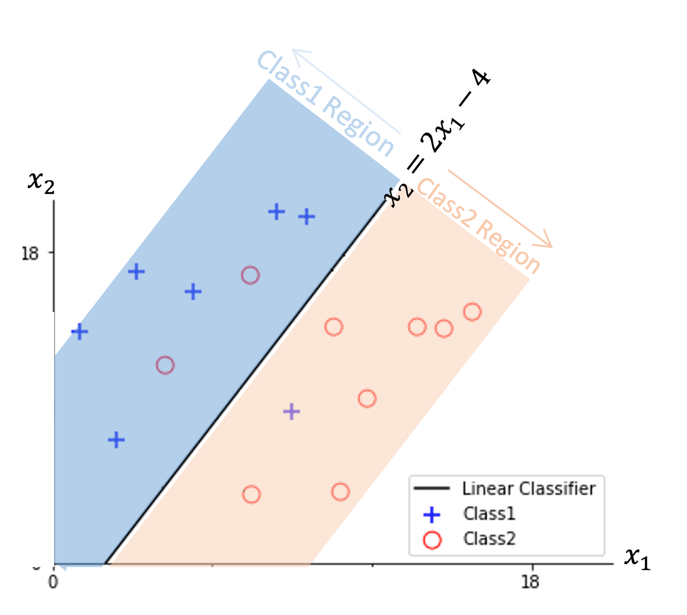
Figure 5.23. Example of binary class dataset with decision boundaries.
We can state for short that the linear discriminant function is given as:
In our simple case we have that \(f\) is the step function \(h\) given as:
In the general case we have:
Where \(f\) is an activation function that maps the relevant position of the data point \(\mathbf{x}_{n}\) with respect to the decision boundary \(\mathbf{w}^{\top} \mathbf{x}=\mathbf{0}\) into a label to predict which class the data point is from.
Lesson summary
In this introductory lesson, we have built on the ideas that we covered in regression in order to utilise them in classification. You have seen how a simple linear classification model is capable of classifying linearly separable classes in a dataset, and we saw how an activation function plays a role in moving from a linear regression model to a linear classification model.